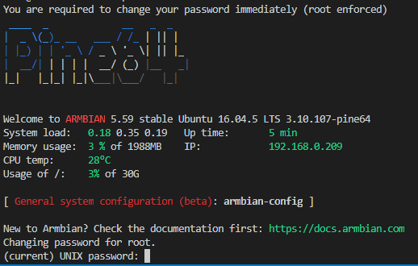
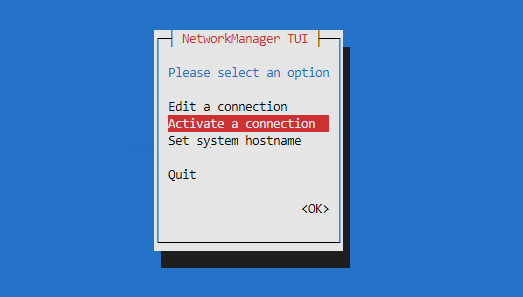
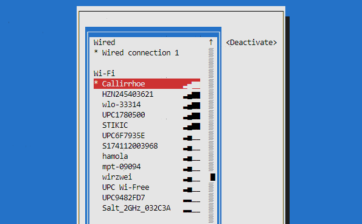

My new Server (Pine64) on armbian
Short instruction to install armbian on the Pine64+, configuring the hostname, WiFi, timezone, file system table and installing Samba.
Installation
I flashed the SD card using ETCHER with the latest Armbian without desktop.
Once ETCHER is done burning the image on the SD card, insert the card into the Pine64 and attach an ethernet cable. Then login to the system as root
$ ssh root@192.168.0.10The default password is 1234. Only after the first login you are asked to change root’s password and to create a default user with sudo privilege.

Follow the screen instructions.
Configuration
Hostname
The default hostename is pine64. It can be changed as follow.
$ hostnamectl set-hostname NAME
# check your hostname
$ hostnamectl
Static hostname: ganymede
Icon name: computer
Machine ID: a1754736e6414a42a02b12485f7cac40
Boot ID: b29752fb27614fd096eb2c2aecea430e
Operating System: Ubuntu 16.04.5 LTS
Kernel: Linux 3.10.107-pine64
Architecture: arm64Open the /etc/hostname file with your favorite text editor and check if the new hostname has been applied to the file.
$ nano /etc/hostnameIf not, update the hostname in this file manually. Then save the file, and exit the text editor.
Next we need to check thes hosts file. Open the file /etc/hosts.
$ nano /etc/hostsChange the first line and replace your old hostname with the new one. Save the file and exit the editor.
Finally run the following command to update your hostname:
$ /etc/init.d/hostname.sh startRun the following command to check your new hostname:
$ hostnameThe new hostname will be displayed in your ssh terminal.
WiFi
Armbian uses Networkmanager to manage the network interfaces. Simple run
$ nmtuiand add a new WiFi connection. To see how you configure your WiFi manually read the Linux cheatsheet
Activate a new connection.

Select your Wireless and enter the passphrase if needed.

Once you are done you can run ifconfig to check if you get an IP from the access point.
Timezone / Local time
To check which timezone is linked to the localetime run this.
$ ls -al /etc/localtime
lrwxrwxrwx 1 root root 27 Sep 23 15:54 /etc/localtime -> /usr/share/zoneinfo/Etc/UTCAs you see it is UTC. You can change as follow under root.
$ unlink /etc/localtime
$ ln -s /usr/share/zoneinfo/Europe/Zurich /etc/localtimeRestart the ntpd service
$ systemctl restart ntp.serviceand check the new date by running date.
Language
First, you have to set environment variables such as LANG, LANGUAGE, LC_CTYPE, LC_MESSAGES to your local language. Usually LANG (or LC_ALL) is sufficient. Check check wich locals are preset on the system run
$ locale -aLocales that are not listed can be generated.
$ locale-gen de_DE.UTF-8
Generating locales...
de_DE.UTF-8... done
Generation complete.Locales can also be reconfigured issuing the following command:
$ dpkg-reconfigure localesA window will ask you to select the languages (you select with SPACE) you want to have available. Choose your own.
Changing locals
You may manually change your system’s locale entries by modifying the file /etc/default/locale. Here is a list of variables and its aspect.
As an alternative to editing these files by hand update-locale may be used
$ update-locale LANG=de_DE.UTF-8Samba
Install Samba Server using the samba package.
$ apt-get install sambaBe aware that Samba uses it’s own password system. Hence users need to be added by root or sudoer. Note that the users have to exist in /etc/passwd.
To add a user run the following command
$ smbpasswd -a <me>
# follow the screen instructions
Added user <me>.Now you can add new shares to your samba config.
$ nano /etc/samba/smb.confFirst change the global settings. It is under the section [global].
[global]
workgroup = your workgroup
server string = file server
security = user
map to guest = bad user
create mask = 0775
force create mode = 0775
directory mask = 0775
force directory mode = 0775
force group = sambashareIt means that the security is based on user level. Furthermore the file system permission will always be 0775.
Shares are addes as sections. For example add the following line to the end. This adds a new share called scans and can be accessed anonymously in read and write mode.
[scans]
comment = documents from scanner
path = /storage/scans/
guest ok = yes
guest account = test
available = yes
browseable = yes
public = yes
writable = yesThe following example addes the share secret which is only accessible by the test.
[secret]
comment = data disk
path = /storage/data/
public = no
writable = yes
guest ok = no
valid users = test
write list = testRestart samba using the following two commands.
$ systemctl restart smbd.service
$ systemctl restart nmbd.serviceDisc Mount
To see which disks are attached to the system you can use the “queries” inside the /dev/disk/ folder.
The following “query” listens all attached disks by its UUID.
$ ls -al /dev/disk/by-uuid/
total 0
drwxr-xr-x 2 root root 100 Sep 23 15:07 .
drwxr-xr-x 5 root root 100 Jan 1 1970 ..
lrwxrwxrwx 1 root root 15 Sep 23 14:50 97dbd6a3-cb6e-4dd8-a999-76e955b73f0e -> ../../mmcblk0p1
lrwxrwxrwx 1 root root 10 Sep 23 15:07 dc067546-9c42-4f5a-a593-953e5e50897d -> ../../sda1
lrwxrwxrwx 1 root root 10 Sep 23 15:07 e786913c-ee77-4e04-a0d6-1b70b2b4ff69 -> ../../sdb1Now that you know the UUIDs of your discs are, you can change the file system table.
$ nano /etc/fstabYou can add the following lines for sda1 and sdb1.
# <file system> <dir> <type> <options> <dump> <pass>
UUID=dc067546-9c42-4f5a-a593-953e5e50897d /storage/data/ ext4 nofail,rw,relatime,data=ordered 0 0
UUID=e786913c-ee77-4e04-a0d6-1b70b2b4ff69 /storage/backup/ ext4 nofail,rw,relatime,data=ordered 0 0